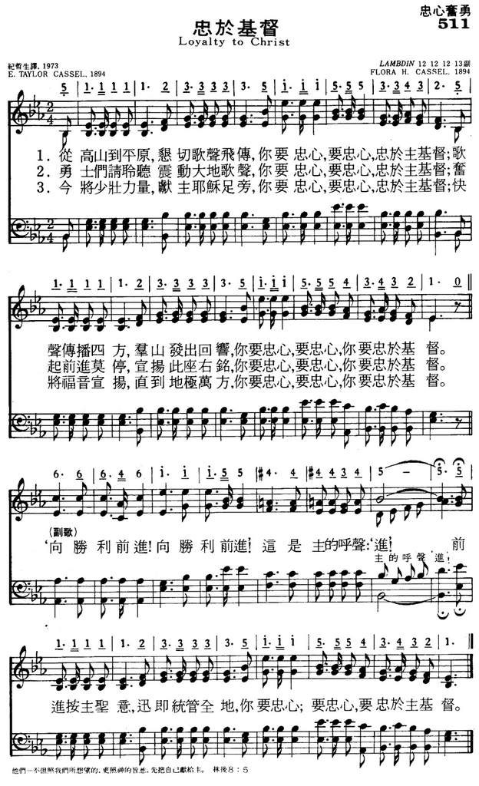

|
|
|
|
1 From over hill and plain Refrain: 2 O hear, ye brave, the sound 3 Come, join our loyal throng, 4 The strength of youth we lay |
511忠于基督
1.从高山到平原, 恳切歌声飞传,
你要忠心, 要忠心, 忠于主基督. 歌声传播四方, 群山发出回响, 你要忠心, 要忠心, 你要忠于基督. 向胜利前进!向胜利前进! 这是主的呼声:'进!'前进按主圣意, 迅即统管全地, 你要忠心, 要忠心, 要忠于主基督. 2.勇士们请聆听,震动大地歌声, 你要忠心, 要忠心,忠于主基督. 奋起前进莫停, 宣扬此座右铭, 你要忠心, 要忠心, 你要忠于基督. 3.今将少壮力量, 献主耶稣足旁, 你要忠心, 要忠心, 忠于主基督. 快将福音宣扬, 直到地极万方, 你要忠心, 要忠心, 你要忠于基督. |
|
https://www.mred365.cn/szxg/7514.html
 https://hymnary.org/hymn/WASH1957/page/346
|
|
|
|
|


From Over Hill and Plain (Loyalty to Christ) https://youtu.be/k88PSXys6uc -
Khrista Chiziilo [Loyalty To Christ] Poula Hymn No. 338 https://www.youtube.com/watch?v=l1o7TYQK5PE -
Loyalty To Christ { Khrista Chiziilo } | Poumai Gospel Song | https://www.youtube.com/watch?v=NzVaJI6tLjk
| Text: | Loyalty to Christ |
| Author: | Elijah T. Cassel, 1849-1930 |
| Tune: | [From over hill and plain] |
| Composer: | Flora H. Cassel, 1852-1911 |
| Short Name: | E. T. Cassel |
| Full Name: | Cassel, E. T. (Elijah Taylor), 1849-1930 |
| Birth Year: | 1849 |
| Death Year: | 1930 |
Flora H. Casse
Words: Elijah Taylor Cassel (b. Nov. 27, 1849; d. July
3, 1930)
Music: Flora Hamilton Cassel (b. Aug. 21, 1852; d. Nov. 17,
1911)
Links:
Wordwise Hymns (Elijah and Flora)
The Cyber
Hymnal
Hymnary.org
Note: Elijah and Flora Cassel were husband and wife. Elijah Cassel was a medical doctor, who later served as a pastor. They also combined their talents on a song entitled The King’s Business (a better quality selection, in my view). The present one is another of those extremely repetitive gospel songs, with the word “loyalty” used some 37 times, counting the refrains. I suppose it does work as a rallying cry, but that seems a bit much!
The song was written in 1894 at the request of the Baptist Young People’s Union. It was sent to them, but not used, so Mr. Cassel asked for it to be returned. He then sent it to the Epworth League, a Methodist organization for young adults. They soon put it to use. Later, the BYPU thought the song had merit, and started using it themselves. That focus on a challenge to young people can be seen in the closing stanza.
CH-4) The strength of youth we lay at Jesus’ feet today,
’Tis loyalty, loyalty, loyalty to Christ;
His gospel we’ll proclaim, throughout the world’s domain,
Of loyalty, loyalty, yes, loyalty to Christ.
On Hymnary.org you can see the original publication. Notice that the first line then was, “Upon the western plain / There comes the signal strain,” perhaps indicating the location of the convention for which it was initially intended. This opening remained for some time, but a 1902 book begins the broader form we have now.
CH-1) From over hill and plain there comes the signal strain,
’Tis loyalty, loyalty, loyalty to Christ;
Its music rolls along, the hills take up the song,
Of loyalty, loyalty, yes, loyalty to Christ.
“On to victory! On to victory!”
Cries our great commander, “On!”
We’ll move at His command,
We’ll soon possess the land,
Through loyalty, loyalty,
Yes, loyalty to Christ.
Loyalty. The dictionary defines it as faithfulness to one’s commitments, faithfulness to an individual or a group. Fidelity, trustworthiness and allegiance are possible synonyms. Disloyalty, when it relates to one’s country or rulers, is called treason, or being a traitor. Disloyalty to the Lord God, at least in its final form, is called apostasy–a departure from the faith.
In the Old Testament, King David’s son Solomon was blessed with many wonderful gifts. When he took the throne, his father prayed, “Give my son Solomon a loyal heart to keep Your commandments and Your testimonies and Your statutes” (I Chron. 29:19). And David advised his son, “Let your heart therefore be loyal to the LORD our God, to walk in His statutes and keep His commandments, as at this day” (I Kgs. 8:61).
But over the years Solomon’s passion to serve the Lord began to fade. In disobedience to God (Deut. 17:14, 17), he acquired a huge harem, and many of the women were idol worshipers. It seemed almost inevitable that, “When Solomon was old, that his wives turned his heart after other gods; and his heart was not loyal to the LORD his God, as was the heart of his father David” (I Kgs. 11:4).
The most infamous traitor in the New Testament, perhaps the greatest in all of human history, is Judas Iscariot. While he feigned loyalty to Christ and the other disciples, he stole from the common purse (Jn. 12:6). Later, for “thirty pieces of silver” (which some estimate as being worth about twenty dollars) he agreed to betray Christ to His enemies (Matt. 26:15).
The Lord Jesus declared plainly, “No one can serve two masters; for either he will hate the one and love the other, or else he will be loyal to the one and despise the other. You cannot serve God and mammon [money]” (Matt. 6:24). Whether the temptation to turn away comes from money, or promised pleasures, or popularity and power, or something else, no disloyalty to God is ever worth what it will cost in the long run.
CH-2) O hear, ye brave, the sound that moves the earth around,
’Tis loyalty, loyalty, loyalty to Christ;
Arise to dare and do, ring out the watchword true,
Of loyalty, loyalty, yes, loyalty to Christ.
CH-3) Come, join our loyal throng, we’ll rout the giant wrong,
’Tis loyalty, loyalty, loyalty to Christ;
Where Satan’s banners float we’ll send the bugle note,
Of loyalty, loyalty, yes, loyalty to Christ.
Questions:
1) What will be the practical evidence of loyalty to Christ in one’s
life?
2) What are some other things pressing for the loyalty of our young people today?
Links:
Wordwise Hymns (Elijah and Flora)
The Cyber
Hymnal
Hymnary.org